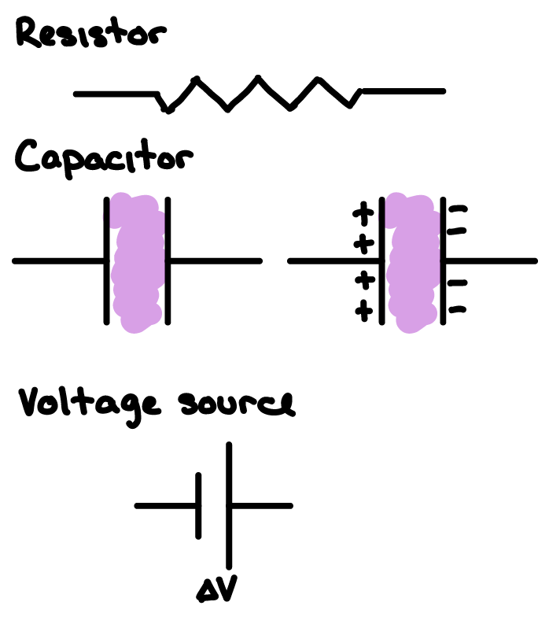
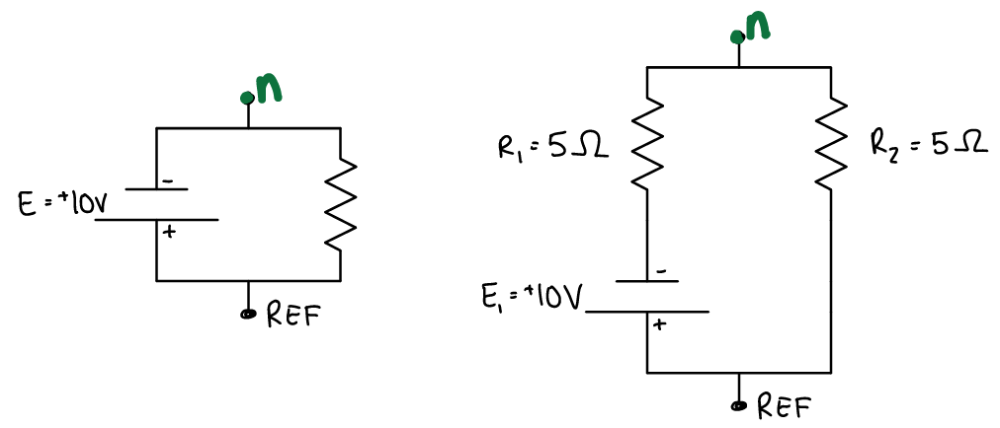
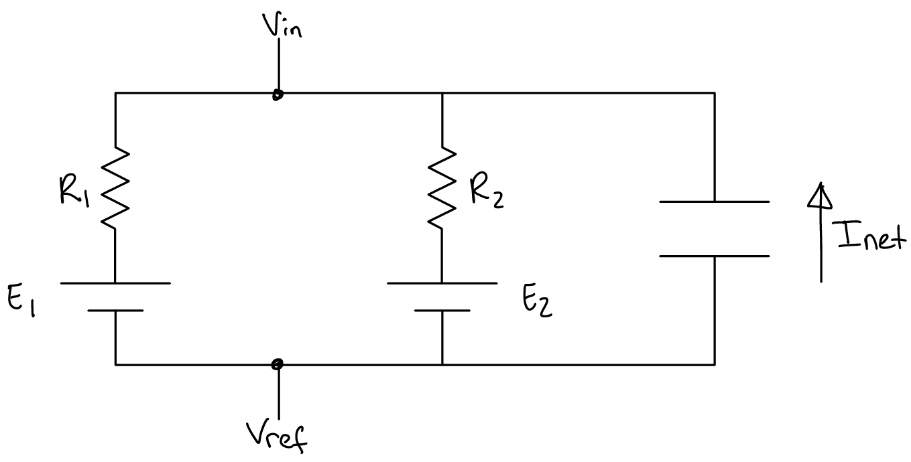
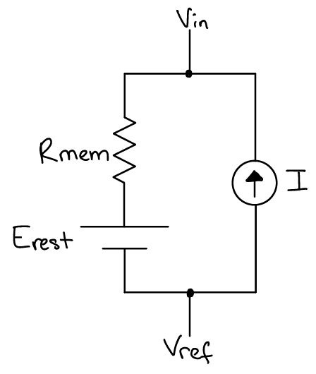
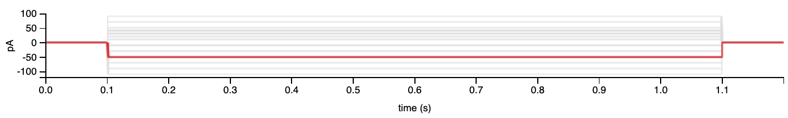
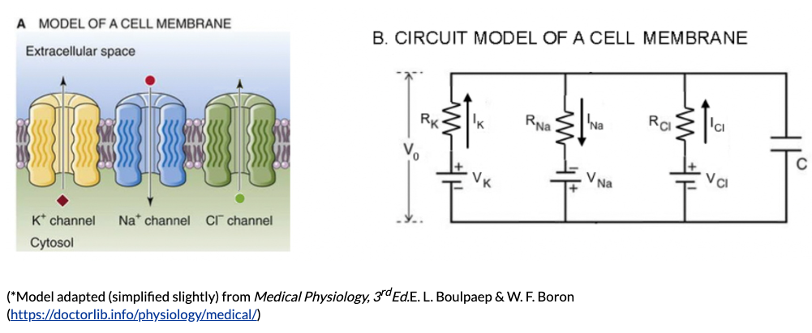
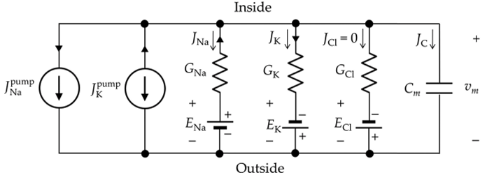

Lab Manual
Contents
Lab Manual¶
A small set of electrical components can be used to describe many fundamental electrophysiological properties of neurons. Electric circuits are also well-described by basic algebraic and differential equations. Therefore, we often use electrical circuit models of neural membranes to formulate computational models of neural membranes. Today, you will build/formulate two computational models based on this technique: one of steady-state resting membrane potential, and one of membrane potential responses to applied trans-membrane current.
Circuit Diagrams¶
A circuit diagram is a graphical representation of an electrical circuit. You have already encountered symbols for three of the basic circuit components that you will be using for your computational models today: resistors, capacitors, and voltage source. As you now know, circuit components can either be arranged in series (attached end-to-end) or in parallel (side by side with each set of ends all attached together).
{kind=link}
Today, you will need to use one more circuit component in your diagrams: a current source. A current source applies a current to the circuit.
{kind=link}
Finally, to interpret circuit diagrams it is important to remember the following two principles:
voltage is equal at all points along continuous wires (lines uninterrupted by a circuit component such as a resistor, capacitor, or voltage source)
with a voltage meter, you can test this for yourself on the physical electrical circuit models at your table.
current is equal at all points along individual wires between nodes of bifurcation or convergence
Voltage and Current across Capacitors¶
As you now know, capacitors store charge.
The charge that a capacitor holds at steady state is proportional to its capacitance (ability to store charge) and the voltage across it.
A change in electrical potential (voltage; \(\partial{V}\)) would lead to a change in charge (\(\partial{Q}\)); and vice versa. In this case, we would be assuming that capacitance is a constant (the value does not change).
If charge builds up on a capacitor (ie. due to an applied voltage across it), current effectively flows across the capacitor.
Without a change in charge, there is no current. Similarly, if a current is applied accross a capacitor, then charge builds up on it (\(\partial{Q}\))… and the voltage changes (\(\partial{V}\)).
Voltage and Current across Resistors¶
The voltage at one end of a resistor is different from the voltage at the other end of the resistor. This is because voltage drops (or changes) across a resistor. The magnitude of this voltage change is given by Ohm’s Law:
When ionic conductances behave according to this equation (ie. linearly), they are considered Ohmic.
In this case, current can only flow through a resistor when there is a voltage across the resistor; and vice versa. If \(V = 0\), then \(I = 0\). In response to an applied current (or voltage) across a resistor, the change in volgate (or current) is practically instantaneous. Because \(V\) and \(I\) do not depend on \(t\), they are constants (ie. the derivative of the equation is equal to the original equation).
Concepts and Equations of Electric Circuits¶
Conservation of Energy¶
By the law of conservation of energy1, it follows that the algebraic directed sum of the potential differences (voltages) around any closed loop is zero.
where \(n\) is the total number of voltage sources (batteries, resistors, capacitors, etc) in the circuit.
Task 1
Calculate the voltage at each labeled node n (relative to the reference REF node) in the following circuit diagrams. First, identify the voltage sources, then solve for the conservation of energy equation to find any unknown voltages. After the values of all voltage sources are known, you can identify the voltage at any point in the closed circuit.
{kind=link}
Conservation of Charge¶
By the law of conservation of charge1, it follows that the current entering any junction (point of divergence or convergence) is equal to the current leaving that junction.
where \(n\) is the total number of wires diverging from a single wire.
{kind=link}
Computational Models¶
With that introduction to drawing and analyzing circuit diagrams, you are ready to learn how to build computational models based on electric circuit models of neuron membranes.
Steady State Model¶
Task 4: Create a computational model of steady state (resting) membrane potential
Consider the following electric circuit model of resting membrane potential that you worked with in Part I of the lab in Week 1
{kind=link}
Remember that each voltage source in the circuit represents a specific ion’s equilibrium potential and each resistor in the circuit represents the conductance of that specific ion.
For each voltage source (\(E\)) in the electrical circuit diagram, indicate which side of each voltage source is equal to \(V_{ref}\). Label the voltage value on the other side of each voltage source as \(V_1\) or \(V_2\), respectively.
Write an equation for the voltage change across each resistor (\(V_{R1}\) and \(V_{R2}\)) in terms of \(V_{in}\), \(V_1\), \(V_2\), and/or \(V_{ref}\).
Write the equation for current across a resistor in terms of voltage across the resistor and the value of its resistance.
Combine #3 with #2 to write the equation for current across each resistor (\(I_1\) and \(I_2\)) in terms of \(V_{in}\), \(V_1\), \(V_2\), and/or \(V_{ref}\).
In the circuit diagram, use an arrow to indicate the current across \(R_1\) as \(I_1\) and an arrow to indicate the current across \(R_2\) as \(I_2\) (the direction of the current is not important yet).
Given the assumption of conservation of charge, write an equation for the total (net) current across the cell membrane in terms of \(I_1\) and \(I_2\).
Rearrange #6 to git an equation for \(I_1\) in terms of \(I_2\).
Hint: the resting membrane potential is a steady state condition, meaning that there is no net current flow across the membrane.
Substitute your equations from #4 for \(I_1\) and \(I_2\) into the equation from #7.
Rearrange your equation from #8 to describe \(V_{in}\) (the voltage inside the model neuron membrane) in terms of all the other variables.
Finally, let’s put the equation for \(V_{in}\) in terms of the Equilibrium potentials for the ion channels (\(E_1\) and \(E_2\)). Substitute for \(V_1\) and \(V_2\) in terms of \(E_1\), \(E_2\), and \(V_{ref}\).
Note that we can set \(V_{ref} = 0\) if we are measuring the inside of the cell membrane (\(V_{in}\)) relative to the outside (\(V_{ref}\)).
You have just built a computational model for the membrane potential of a neuron. You built the model from first principles of an electric circuit model of neuron membranes. Your model describes the voltage across the membrane in terms of voltage sources (equilibrium potentials) and resistors (ion channel conductance). In the Data Explorer, we will implement your model to test how well it explains resting membrane potentials of neurons.
Task 5: Analyze your model by hand
Consider a neuron with two types of ion conductances: sodium (\(Na\)) and potassium (\(K\)). In your model, use \(E_1\) to represent the sodium equilibrium potential and \(R_1\) to represent the resistance across sodium channels. \(E_2\) and \(R_2\) will be used to represent the equilibrium potential and resistance of the potassium conductance.
Use your model to calculate the predicted resting membrane potential (\(V_{in}\)) for a neuron where the equilibrium potential of sodium is +130mV, the resistance acrooss sodium channels is 95M\(\Omega\), the equilibrium potential of potassium is -90mV, and the resistance acrooss potassium channels is 5M\(\Omega\).
Use your model to calculate the predicted resting membrane potential (\(V_{in}\)) of the same neuron as in #1, but with the resistance across sodium channels = 50M\(\Omega\) and the resistance across potassium channels = 50M\(\Omega\).
Does the result depend on the scale of the measurement units (mega, milli, etc) used in the calculation?
Dynamic Model¶
Physiologically, current gets applied across the membrane when synaptic inputs are activated. Understanding how membrane voltage changes in response to applied current is essential to understanding neural processing. Experimentally, current can be applied across the membrane when using intracellular electrode configurations. We therefore often do this to get information about how a specific neuron would process its synaptic inputs.
What would you expect to happen to the voltage across a neuron membrane in response to an applied current?
Now that you have a computational model of a neuron’s resting membrane potential, you will create a second computational model to simulate how the membrane potential of a neuron changes when current is applied across the membrane.
To start, we can use a simplified version of the \(V_{rest}\) circuit in in which all voltage sources (equilibrium potentials) are combined into one steady state equilibrium potential (the “resting” potential of the neuron; \(E_{rest}\)) and all resistors (ion channels) are combined into one net membrane resistance of the neuron (\(R_{mem}\)).
We will start by modelling the neuron membrane as ion channels alone (ie. no capacitance).
For this model, we need to add a current source to the circuit. The current source simulates the synaptic input (or input from an electrode, like you have done experimentally with the Getting Intracellular Amp).
{kind=link}
Now, let’s use that circuit to formulate a computational model and predict the voltage response to applied current.
The behavior of Voltage and Current sources in a circuit can get conceptually tricky. Practically, you can think of the voltage source adjusting its resistance to match the current flowing through and the current source adjusting its resistance to match the voltage across it. In other words, instead of shunting \(V_{in}\) and \(V_{ref}\), the voltage across the current source is \(V_{in}\) - \(V_{ref}\). Ultimately, the current source controls the amount of current flowing in the circuit.
Task 6: Create a computational model of the membrane potential response to applied current
Assuming conservation of charge, write the equation for the current across the resistor \(R_{mem}\) in terms of the applied current.
Write the equation for the current aross \(R_{mem}\) in terms of \(R_{mem}\) and the voltage across \(R_{mem}\). Substitute this into the equation from #1.
Write the equation for the voltage across \(R_{mem}\) in terms of \(V_{in}\), \(E_{rest}\) and \(V_{ref}\).
Set \(V_{ref} = 0\) because we will be measuring \(V_{in}\) relative to \(V_{ref}\) applied current (the current in the circuit).
Substitute your equation from #3 for the voltage across \(R_{mem}\) into your equation from #2 for the applied current.
Rearrange to solve for \(V_{in}\).
You now have a computational model for \(V_{in}\) in terms of \(E_{rest}\), \(R_{mem}\), and the applied current (\(I\)).
Task 7: Analyze the model
Let’s use the following values:
\(E_{rest}\) = -63mV
\(R_{mem}\) = 345M\(\Omega\)
Calculate \(V_{in}\) when the applied current is 0
Calculate \(V_{in}\) when the applied current is -50 pA.
Note: Does the result depend on the scale of measurement units (milli, pico, mega, etc) used in the calcualtion?
Draw the membrane voltage response (calculated based on your computational model) that you would predict across time in response to the following current stimulation protocol (a 1 sec duration, -50 pA amplitude square wave stimulation pulse applied across the membrane at t = 100 msec after the onset of a trial and followed by 100 msec of 0pA).
Take a look at the response of real neuron membrane to this same stimulus from the cell types database at the Allen Brain Institute (note that the Input Resistance is reported in M\(\Omega\) by default.
How did your prediction match the data from real neurons?
{kind=link}
So… the computational model you just formulated does not accurately capture (predict) the response of a neuron’s membrane to applied current.
We know that neuron membranes act as capacitors in addition to acting as a resistor. Maybe the capacitance of the neuron membrane accounts for the discrepancy between our current model prediction and the electrophysiology data. Let’s add that electrical component to the model membrane circuit and update the computational model.

Task 8: Set up the capacitor equations for the model
Rearrange the two equations for capacitor current and capacitor charge to get an equation for the change in voltage across time (\(\partial{V} / \partial{t}\)) in terms of the capacitor current (\(I\)).
You can check out this hint2 after discussing your strategy and considering the equations and equation manipulations for at least 5 minutes.
Task 9: Modify your computational model of the membrane potential response to applied current
Assuming a conservation of charge, write the equation for the applied current in terms of the current across \(R\) and the current across \(C\).
What is the voltage across \(C\) in terms of \(V_{in}\), \(V_{ref}\), and/or \(E_{rest}\)? (set \(V_{ref} = 0\))
What is the voltage across \(R\) in terms of \(V_{in}\), \(V_{ref}\), and/or \(E_{rest}\)? (set \(V_{ref} = 0\))
Write the equation you solved in Task #6 for the Current across a capacitor (\(I_C\)) in terms of the Voltage across a capacitor (\(V_C\)). Substitute the equation from #2 in for \(V_C\).
Write the equation for the Current across a resistor (\(I_R\)) in terms of the Voltage across a resistor (\(V_R\)). Substitute the equation from #3 in for \(V_R\).
Substitute the equations from #4 and #5 into the equation from #1. Remember that we can set \(V_{ref}=0\).
Solve the equation from #6 for \(\partial{V_{in}}\).
You have just built a computational model for the membrane potential of a neuron in response to applied current. Notice that it is a differential equation instead of a steady-state equation. In other words, the voltage of the membrane in response to an applied current will depend on the current voltage of the membrane (relative to the equilibrium potential) and the amount of time analyzed. In the Data Explorer, we will implement your model to test how well it explains resting membrane potentials of neurons.
Task 10: Let’s think about this model a bit before simulating it
Remember (or see now) that \(\frac{(V_{in} - E_{rest})}{R}\) is the current across the resistor.
What happens to \(V_{in}\) when \(V_{in} = E_{rest}\)?
Note: this is time step #1 when a current is applied across the membrane)
What happens when the current accross the resistor is equal to the applied current?
Note: this is the new “steady state” membrane potential in respose to an applied current. How does this relate to the first version of this model in Task #6 and 7?
What happens when membrane resistance is insanely high? How about effectively infinitely high so that the neuron’s membrane could be modelled by the capacitor alone?
Extensions¶
Ultimately, you could combine both computational models to create a more comprehensive model that captures the independent contribution of multiple ionic conductances and the membrane capacitance.
 {kind=link}
{kind=link}
Scripted implementation of computational models (SIMULATION)¶
We will use the Data Explorer notebook to work through the implementation of your computational models together. Later, you will answer questions in the Responses notebook.
- 1(1,2)
- 2
You can take the derivative of an equation by thinking about the difference between the equation values at two different moments in time (a change in time = \(\partial{t}\)). Remember that constants do not change over time. You can combine both equations once they are in the same derivative format.